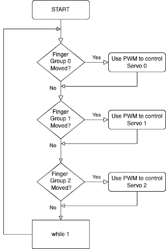

For our final project, we used a Pi Pico with several servo motors for our final project to control an Animatronic Hand. Specifically, we used these servo motors actuated by flex sensors to control the fingers of an Animatronic Hand. These flex sensors were attached to fingers on a glove enabling any user to wear this glove and actuate the animatronic hand by flexing their fingers.
The expected performance of this project is human hand can directly control each finger’s movement of the animatronic hand by moving the corresponding finger. Technology and industries are continuously looking for improvements in everyday processes. One of these improvements is precision. The motivation for our project relies on improving this level of accuracy that sometimes the human hand cannot achieve. Our project’s applications could be vast and not restricted to only one industry.
Our “Animatronic Hand” project could positively impact different industries and serve various field applications (e.g., aerospace, medical, manufacturing, and automotive). We plan to merge this intelligent system with evolving technological advancement for the betterment of society. This project’s societal impact aligns with the IEEE Code of Ethics section I., which says, “To improve the understanding by individuals and society of the capabilities and societal implications of conventional and emerging technologies, including intelligent systems.”
As a team, we planned to adhere to OSHA Electrical Safety Standards to ensure that all humans used in the process of this project are held to a high safety standard to avoid injuring them or their property. As mentioned above, we could use flex sensors to sense signals from the human hand. This design implicates working with sensors that contain voltage.
Our idea comes from two previous projects. The first project is the EMG Robotic Hand project done by Michael Haidar, Jason Hwang, and Srikrishnaa Vadivel in the Fall of 2016 (Haidar et al., n.d.). In this project, they tried to control the robotic hand by sensing the muscular contractions. They used electrodes on the arm to differentiate between signals from different fingers. Besides, they designed their instrumentation amplifier and bandpass filter to extract the small signal from the skin’s surface. The second project is the Tendon Flex Controlled Robot Hand project done by Caeli MacLennan, Cassandra Scarpa, and Parth Saraswat in the fall of 2019 (MacLennan et al., n.d.). In this project, they used a cuff on the user’s forearm to control the robotic arm. By reading the flex sensors, they could determine which finger the movement occurred on.
We wanted to improve the design and accuracy of the robotic hand based on their design. One major problem is that their project needed to be more accurate because the sensors were placed far away from the fingers. They tried to measure the muscular movement on the forearm to determine the finger movement, while the muscular movement was minor. The other problem is that a calibration process is necessary if someone else wants to use the system because of muscular differences from person to person.
To improve the system’s accuracy, we stitch the flex sensors directly onto a glove the user needs to wear. By doing so, the system’s accuracy is improved because of the apparent movement of fingers. Since everyone will have similar finger movements, we also eliminate the need for further calibration: we only need to perform one initial calibration.
After the initial calibration, the user can wear the glove. Then the Pi Pico will try to read ADC input 0, 1, and 2 sequentially and determine whether a new counter-compare is needed for the corresponding servo to control the rotational position of the servo. Then the servo will try to pull or release the string attached to it and thus increase or decrease the curvature of the cardboard finger. The cardboard finger will rely on the restoring force of the cardboard to return to the initial position after the release of the string. The whole process will repeat forever. The logical structure is as follows:

We wanted to control all five cardboard fingers independently. However, the Pi Pico only had three user-usable ADC inputs. We modified the hardware and software to accommodate the number of ADCs. We modified the hardware to use three servos to change the gesture of the five fingers. The software was modified to read only three ADCs as well.
We used cardboard, straws, and strings to build the animatronic hand. We traced our hands on the cardboard, then cut out the pattern with scissors. We hinged the finger joints with the help of a knife to give a natural curl to the fingers. We attached one edge of the string to the tip of the finger and the other to the servo motors. This setup will enable the fingers to curl when the servo motor is activated. The straws helped us create a channel that would later be used to feed the strings through. The whole design comes from John Park with minor modifications to use three servos instead of four (Park, 2018). A better picture of the setup is illustrated below:
We used three flex sensors, three 22 kOhm resistors, and three servo motors to construct our circuit in this project. The flex sensor is just like a potentiometer, whose resistance would change if one bends the sensor. From this idea, we decided to mount three flex sensors on three different fingers of a glove. And one flex sensor controls the thumb servo motor, and the other two individually control two other fingers of the mechatronic hand. We only use three flex sensors because our Pi Pico only has three usable ADC pins. One way to improve this project in the future is to use a microcontroller with five usable ADC pins.
Then, we use three 22 kOhm resistors with three flex sensors in series to create a voltage divider. We chose 22 kOhm resistors because our flex sensor is 25 kOhm resistance, and with a similar resistance voltage divider, the change in measured voltage is more significant. After that, we will measure the voltage change of the flex sensor and use a linear function to map the voltage to corresponding Duty cycles. We will explain this later in the Software Design section.
After measuring the voltage from three different flex sensors, we connect three servo motors to three PWM output pins on the Pi Pico. And these three servo motors are connected to five fingers directly using five strings. We also have a serial connection directly from the Pi Pico to our computer for debugging purposes. Appendix C is the circuit diagram for your reference.
The main goal of the software design is to first read from the ADC of the Pi Pico to get the current voltage across the flex sensor. After that, we used a linear mapping from voltage to PWM compare value and then sent the PWM signal to the servo motor. Since the PWM signal controls the rotational position of the servos, we can adjust the servo position using the flex sensor and eliminate the need to use electrodes as in the initial design.
The first step is to read from the ADC on Pi Pico. The original plan is to control five servos using five fingers. There are only 4 ADCs on the Pi Pico; one is connected directly to the temperature sensor and is not usable. Therefore, we decided to use three servos and flex sensors to implement the system. Flex sensors 0, 1, and 2 will control the thumb, index finger and middle finger, ring finger, and little finger.
We use ADC channels 0, 1, and 2 from GPIO pins 26, 27, and 28 to read the flex sensor voltage. Since we need to know the maximum and minimum voltage across each flex sensor for the later mapping, a serial protothread shows us the raw readings and the converted voltage across the flex sensor. We recorded these readings and found that each flex sensor has different resistance-curvature characteristics. For example, the maximum voltage across flex sensor zero is 3.145V, while the maximum voltage across flex sensor one is 2.933V. This behavior means we must design different voltage-counter compare mappings for each flex sensor-servo pair.
The second step is to set the proper PWM frequency. Since the required PWM frequency of the servo is 50 Hz, we first used a clock divider of 250 to lower the clock frequency of the PWM channel from 125 Mhz to 500 kHz. After that, we set the PWM wrap value to 10000 so that when the PWM counter reaches 10000, it will restart from 0. Since we used the same model of servos, all three PWM channels are set to the same frequency using the same clock divider and wrap value. Thus, the frequency of the PWM channel is 50 Hz after the configuration.
To get an accurate mapping, we first need to know the maximum and minimum counter-compare values for the servos. Using a serial input thread, we found that the maximum counter-compare value for the servo is 1250 (max_CCV) while the minimum value is 275 (min_CCV). Any value beyond this range will make the servo produce a clicking sound.
After knowing the range of the counter compare value and the range of the voltage across the flex sensor, we can get the mapping by using the formula:
(CCV - min_PWM) * (max_volt - min_volt) = (max_CCV - min_CCV) * (volt-min_volt)
The CCV is the counter-compare value we need for the PWM channel. We are changing the duty cycle of the PWM channel by altering the counter-compare value. Since the duty cycle controls the servo’s position, the servo’s position will also change.
The PWM Interrupt Service Routine (ISR) is configured to be called when we reach the PWM wrap value on PWM channel 0. Since all three PWM channels have the same frequency, we can use a single ISR to control all three PWM channels simultaneously. Once we reach this value on PWM channel 0, we will check whether the new counter-compare value for each channel is different from the old value by 50. If it is more significant than 50, we will write the new counter compare value to the corresponding PWM channel. This additional checking guarantees that the new rotational position of the servo is different from the old position by about 10 degrees and eliminates the random shaking caused by minor variations in flex sensor curvature.
The results of this project met our expectation. We successfully control our custom-made mechatronic hands with three flex sensors. And we can perform simple gestures on the mechatronic hands with the movement of our fingers. Because of linear mapping and threshold in our software, we can precisely control each finger’s degree of movement.
The only setback of this project is that we only have three ADC pins on the Pi Pico, and we have to use only three flex sensors. If we want to make improvements, we could use a microcontroller with five usable ADC pins so that each finger can control corresponding fingers on the mechatronic hand. The other improvement we might want is to make this control wireless so that we can control the mechatronic hand in different locations.
Our design met our expectations and initial design goals, although some modifications were added to overcome the fewer ADC channels. Our initial design goal was to use Pi Pico with five servo motors to independently control the Animatronic Hand’s five fingers. At the end of the project, we could control the five fingers of the Animatronic Hand using three servo-flex sensor pairs because of the limitation of Pi Pico. Judging from the hardware’s design, we could make our cardboard hand using recycled materials instead of making new purchases.
We can use a multiplexer circuit to read from five flex sensors using only three ADC channels. By doing so, each of the five fingers of the Animatronic Hand can be controlled independently, and the accuracy of the gesture will be further improved. Another way to improve the project will be to use rubber bands to increase the restoring force of the cardboard hand. Without rubber bands, the restoring force of the cardboard is insufficient to restore the position of the fingers fully.
No standards apply to our design.
The design of the cardboard hand comes from Build the Animatronic Hand on Adafruit by John Park (Park, 2018). Some minor modifications are applied to the original design to reduce the number of servos required to control the fingers. Other parts of the design do not use any other sources of intellectual property.
Throughout the project, from the design of the circuit to writing the software, we followed all the aspects listed within the IEEE Code of Ethics. All the testing results are authentic and are not taken from somewhere else. There are no forms of discrimination based on race, religion, gender, disability, age, national origin, sexual orientation, gender identity, or gender expression during the project. We ensure the product is safe and will not cause any harm to the user: a 5V DC power supply powers the system, and the electrical components will not directly contact the user. Doing so guarantees the user’s safety when interacting with the device.
The current design needs more improvement for a patent or publishing opportunity. For example, we can develop plans to fabricate the gloves in large quantities using more sophisticated industrial processes. A separate software that can be written to calibrate the system automatically before the first use is also an excellent idea to improve the project for further opportunities.
The group approves this report for inclusion on the course website.
The group approves the video for inclusion on the course’s youtube channel.
/*
* HARDWARE CONNECTIONS
* - GPIO 22 ---> PWM output 0
* - GPIO 20 ---> PWM output 1
* - GPIO 18 ---> PWM output 2
* - GPIO 26 ---> ADC 0
* - GPIO 27 ---> ADC 1
* - GPIO 28 ---> ADC 2
*/
// * ADC 0 Raw value: 0xd57, voltage: 2.751343 V, max: 3.145313 V.
// * ADC 1 Raw value: 0xc11, voltage: 2.488696 V, max: 2.933423 V.
// * ADC 2 Raw value: 0x776, voltage: 1.538818 V, max: 2.103589 V.
// Software design:
// 1. The Pi Pico will read from the ADC channel.
// 2. Then we record the max and min value of the ADC reading for each flex sensor
// using serial output.
// 3. Since the duty cycle determines the rotational position of the servo motor,
// we can control the servo motor using a linear mapping from ADC to duty cycle
// by changing the compare value of the PWM channel.
// 4. We also write the code so that the new PWM will only be sent when the
// difference in rotational position is larger than 10 degrees.
#include
#include
#include
#include
#include "hardware/adc.h"
#include "hardware/irq.h"
#include "hardware/pwm.h"
#include "pico/multicore.h"
#include "pico/stdlib.h"
#include "pt_cornell_rp2040_v1.h"
// PWM wrap value and clock divide value
// For a CPU rate of 125 MHz, this gives
// a PWM frequency of 50Hz.
#define WRAPVAL 10000
#define CLKDIV 250.0f
#define SERVO_PIN_0 22
#define SERVO_PIN_1 20
#define SERVO_PIN_2 18
#define SERVO_PIN_3 16
#define LED 25
// ADC Channel and pin
#define ADC_CHAN_0 0
#define ADC_PIN_0 26
#define ADC_CHAN_1 1
#define ADC_PIN_1 27
#define ADC_CHAN_2 2
#define ADC_PIN_2 28
// Variable to hold PWM slice number
uint slice_num_0, slice_num_1, slice_num_2;
// PWM duty cycle
volatile int control_0, control_1, control_2;
volatile int old_control_0, old_control_1, old_control_2;
// PWM interrupt service routine
void on_pwm_wrap() {
// Clear the interrupt flag that brought us here
pwm_clear_irq(pwm_gpio_to_slice_num(SERVO_PIN_0));
// Update duty cycle by changing the
if (abs(control_0 - old_control_0) > 50) {
// If the difference is less than ~10 degrees, ignore it.
old_control_0 = control_0;
pwm_set_chan_level(slice_num_0, PWM_CHAN_A, control_0);
// Set the new counter compare value for PWM channel.
}
if (abs(control_1 - old_control_1) > 50) {
old_control_1 = control_1;
pwm_set_chan_level(slice_num_1, PWM_CHAN_A, control_1);
}
if (abs(control_2 - old_control_2) > 50) {
old_control_2 = control_2;
pwm_set_chan_level(slice_num_2, PWM_CHAN_A, control_2);
}
}
// Set the new counter compare value to the PWM channel.
void servo_go(int servo_num, int pwm) {
if (pwm < 275) {
pwm = 275;
} else if (pwm > 1250) {
pwm = 1250;
}
if (servo_num == 0) {
control_0 = pwm;
} else if (servo_num == 1) {
control_1 = pwm;
} else if (servo_num == 2) {
control_2 = pwm;
}
}
// User input thread. The user can use this thread to know about the max and
// min valid counter compare value for each servo.
static PT_THREAD(protothread_serial(struct pt *pt)) {
PT_BEGIN(pt);
static int test_in, servo_num;
while (1) {
sprintf(pt_serial_out_buffer, "input a duty cycle (275-1250): ");
serial_write;
// spawn a thread to do the non-blocking serial read
serial_read;
// convert input string to number
sscanf(pt_serial_in_buffer, "%d %d", &servo_num, &test_in);
sprintf(pt_serial_out_buffer, "received: %d \r\n", servo_num, test_in);
serial_write;
if (test_in > 1250) {
continue;
} else if (test_in < 275) {
continue;
} else {
servo_go(servo_num, test_in);
}
}
PT_END(pt);
}
// The protothread used to read from each of the ADC channel.
static PT_THREAD(protothread_adc(struct pt *pt)) {
PT_BEGIN(pt);
while (1) {
const float conversion_factor = 3.3f / (1 << 12);
// convert factor used to convert from raw reading to voltage.
adc_select_input(ADC_CHAN_0);
uint16_t result_0 = adc_read();
printf("0 Raw value: 0x%03x, voltage: %f V\n", result_0, result_0 * conversion_factor);
servo_go(0, 2475 * result_0 * conversion_factor - 6533); // send the new counter compare value.
sleep_ms(100);
adc_select_input(ADC_CHAN_1);
uint16_t result_1 = adc_read();
printf("1 Raw value: 0x%03x, voltage: %f V\n", result_1, result_1 * conversion_factor);
servo_go(1, 2196 * result_1 * conversion_factor - 5191);
sleep_ms(100);
adc_select_input(ADC_CHAN_2);
uint16_t result_2 = adc_read();
printf("2 Raw value: 0x%03x, voltage: %f V\n", result_2, result_2 * conversion_factor);
servo_go(2, 1726 * result_2 * conversion_factor - 2381);
sleep_ms(100);
}
PT_END(pt);
}
void core1_entry() {
// core 1 only reads from the ADC.
pt_add_thread(protothread_adc);
pt_schedule_start;
}
int main() {
// Initialize stdio
stdio_init_all();
// Tell GPIO 18, 20, 22 that it is allocated to the PWM.
gpio_set_function(SERVO_PIN_0, GPIO_FUNC_PWM);
gpio_set_function(SERVO_PIN_1, GPIO_FUNC_PWM);
gpio_set_function(SERVO_PIN_2, GPIO_FUNC_PWM);
gpio_init(LED);
gpio_set_dir(LED, GPIO_OUT);
gpio_put(LED, 0);
// Find out which PWM slice is connected to each GPIO.
slice_num_0 = pwm_gpio_to_slice_num(SERVO_PIN_0);
slice_num_1 = pwm_gpio_to_slice_num(SERVO_PIN_1);
slice_num_2 = pwm_gpio_to_slice_num(SERVO_PIN_2);
// Mask our slice's IRQ output into the PWM block's single interrupt line,
// and register our interrupt handler.
// Only need one handler since we can control all three PWM channel using
// one interrupt.
pwm_clear_irq(slice_num_0);
pwm_set_irq_enabled(slice_num_0, true);
irq_set_exclusive_handler(PWM_IRQ_WRAP, on_pwm_wrap);
irq_set_enabled(PWM_IRQ_WRAP, true);
// This section configures the frequency of the PWM signals to 50Hz.
pwm_set_wrap(slice_num_0, WRAPVAL);
pwm_set_clkdiv(slice_num_0, CLKDIV);
pwm_set_wrap(slice_num_1, WRAPVAL);
pwm_set_clkdiv(slice_num_1, CLKDIV);
pwm_set_wrap(slice_num_2, WRAPVAL);
pwm_set_clkdiv(slice_num_2, CLKDIV);
// This sets duty cycle, initialize to 500
pwm_set_chan_level(slice_num_0, PWM_CHAN_A, 500);
pwm_set_chan_level(slice_num_1, PWM_CHAN_A, 500);
pwm_set_chan_level(slice_num_2, PWM_CHAN_A, 500);
// Start the channel
pwm_set_mask_enabled((1u << slice_num_0) | (1u << slice_num_1) | (1u << slice_num_2));
// ADC
// Init GPIO for analogue use: hi-Z, no pulls, disable digital input buffer.
adc_gpio_init(ADC_PIN_0);
adc_gpio_init(ADC_PIN_1);
adc_gpio_init(ADC_PIN_2);
// Initialize the ADC harware, blocking.
adc_init();
// Select analog mux input.
adc_select_input(ADC_CHAN_0);
// start core 1
multicore_reset_core1();
multicore_launch_core1(core1_entry);
pt_add_thread(protothread_serial);
pt_schedule_start;
}
Zilin Wang is in charge of designing the hardware. Yilu Zhou is in charge of designing the software. Henry Tenecela is in charge of making the whole animatronic hand. All partners test and debug the system together.
Haidar, M., Hwang, J., & Vadivel, S. (n.d.). EMG Robotic Hand. EMG Robotic Hand. Retrieved December 9, 2022, from https://people.ece.cornell.edu/land/courses/ece4760/FinalProjects/f2016/mh2298_jyh37_sv376/mh2298_jyh37_sv376/mh2298_jyh37_sv376/index.html
MacLennan, C., Scarpa, C., & Saraswat, P. (n.d.). Tendon Flex Controlled Robot Hand. Tendon Flex Controlled Robot Hand. Retrieved December 9, 2022, from https://people.ece.cornell.edu/land/courses/ece4760/FinalProjects/f2019/cam476_cls354_ps978/cam476_cls354_ps978/cam476_cls354_ps978/cam476_cls354_ps978.html
Park, J. (2018, May 23). Build the Animatronic Hand | Animatronic Hand. Adafruit Learning System. Retrieved December 9, 2022, from https://learn.adafruit.com/animatronic-hands/build-the-animatronic-hand
SparkFun Electronics. (n.d.). Flex Sensor 2.2" - SEN-10264. SparkFun Electronics. Retrieved December 9, 2022, from https://www.sparkfun.com/products/10264
created with
Free Website Builder .